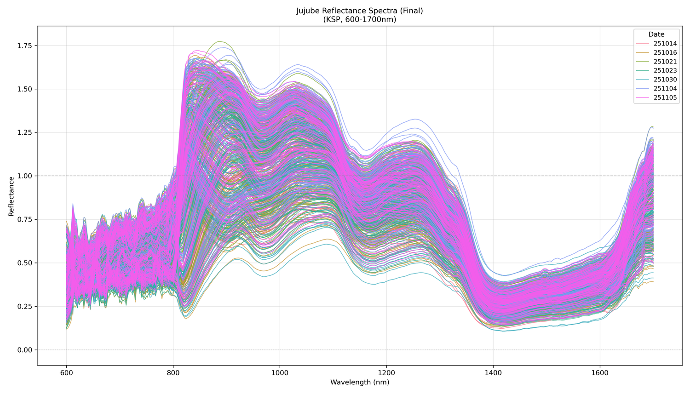
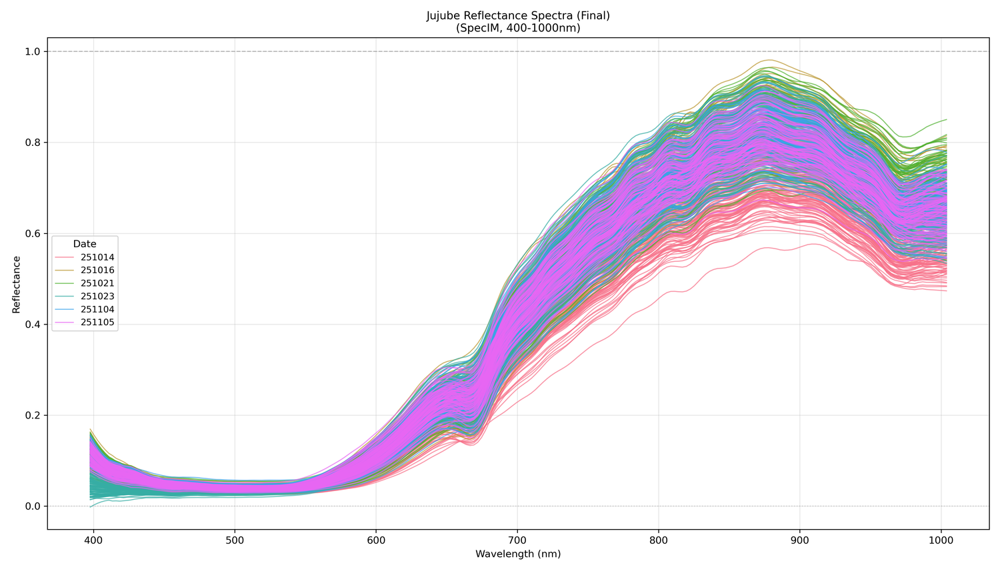
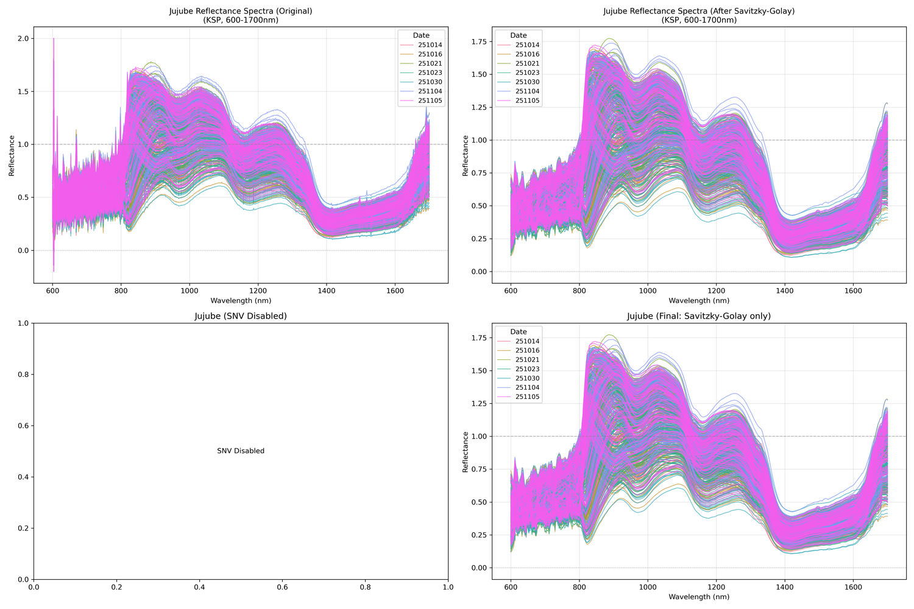
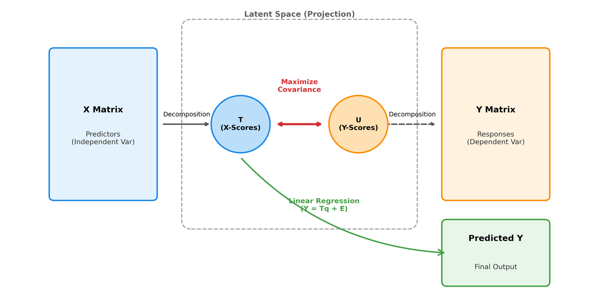

대추 수분 함량, 저장성과 품질 좌우함. 기존 측정 방식은 오븐건조법 등 파괴적이거나 표면 일부만 접촉식으로 측정 — 한계 있음. 비파괴로 전체 표면 수분 분포까지 보기 위해 초분광 영상 선택함.
Specim FX10(400–1000nm, VNIR, 224밴드)과 KSP-3(900–1700nm, NIR, 640밴드) 카메라 2종으로 촬영 시스템 각각 구축. KSP-3는 수분의 O-H 결합 흡수대를 포함해 함수율 예측에 특히 유리함.
대추 영역 분리(세그멘테이션) 선행 필요. 프레임별 수작업 라벨링은 비효율적 — SAM2로 반자동화. 라벨링 정확도 95% 이상 유지하면서 작업 시간 단축.
마스크 영역 평균 스펙트럼으로 반사율 계산 (Reflectance = (Sample − Dark) / (White − Dark)). Savitzky-Golay 스무딩 적용 후 센서별 스펙트럼 확인.


원본 반사율은 산란·노이즈 영향 큼. SNV, MSC, Savitzky-Golay, 1·2차 미분 등 전처리 기법 조합 비교 후 Savitzky-Golay 단독 적용으로 확정. 이렇게 정리한 스펙트럼으로 PLSR 회귀 모델을 K-Fold 교차검증, R²·RMSE 기준으로 평가.


SAM2 기반 반자동 세그멘테이션으로 라벨링 정확도 95% 이상 확보, 라벨링 공정 단축. 원본 초분광 데이터와 측정 라벨은 비공개라 최종 R²·RMSE 수치는 코드 저장소에 공개하지 않음.